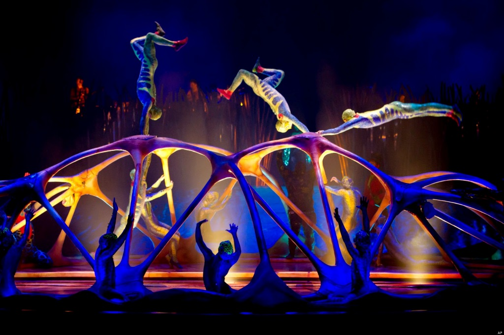
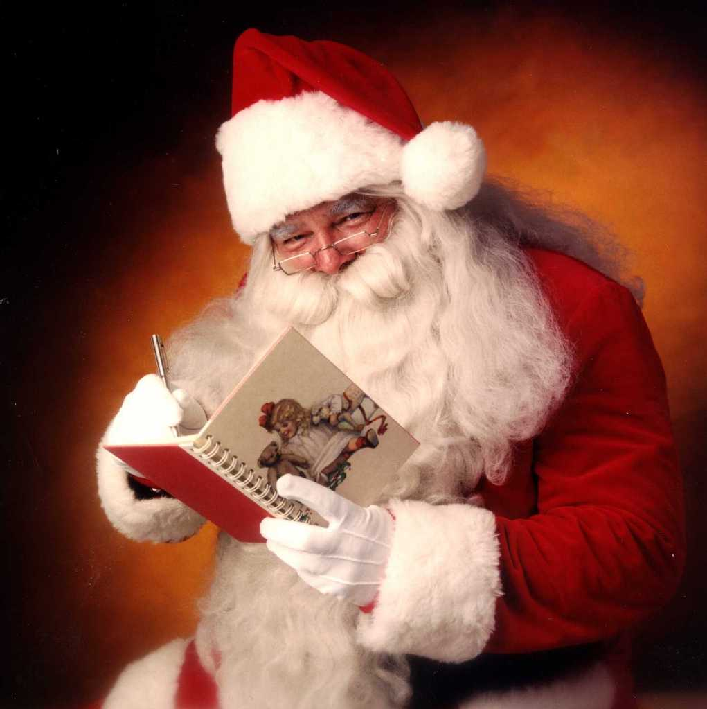
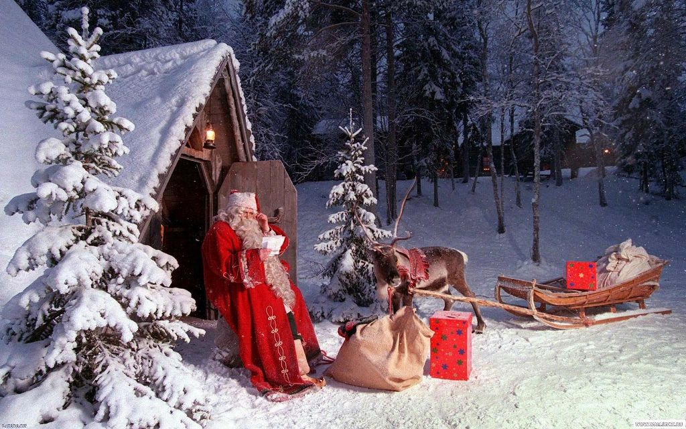

Детские зимние каникулы порадовали всех детей мероприятиями в Ботаническом саду. Команда аниматоров NEWSANTA провели 5 тематических праздников по мотивам известных фильмов и мультфильмов, обожаемых детьми.
Терешко Петр еще в юношеском возрасте, ездил по городам с цирковыми артистами, выступая в разбивках между номерами. Были выступления в детских садиках, домах культуры и детских лагерях.
В итоге, молодого фокусника заметил один продвинутый организатор-менеджер, предлагая сделать прорыв в минском шоу-бизнесе. Идея была в создании тематической вечеринки в стиле «Санта Клауса». В 2020 г., на то время кроме клоунов и пиратов, альтернативы для детских Дней Рождения практически не было. Были сделаны костюмы, сказочный декор и волшебная вечеринка пошла.
Терешко Петр первый использует эффекты, такие как сухой лед, пистолеты, стреляющие дымными кольцами и подобные новинки, которые можно было достать только из-за границы, либо под заказ. Вечеринка стала более чем востребована. Родители на следующий год, на следующий день Рождения стали требовать новые тематические представления. Так стали появляться «Дед Мороз и Снегурочка», «Санта Клаус и олень Рудольф» и т.д.
Таким образом, NewSanta становятся самым востребованным коллективом в сфере оригинальных зимних детских праздников. В 2023году коллектив формируется окончательно и делает себе полноценную творческую мастерскую со складами реквизита, декораций, костюмерной и офисом в одном месте, двухэтажном коттедже в центре Минска.